library(rmarkdown)Take-home_Exercise 1
Demographic structures and distribution of Singapore in 2024
1. Overview
1.1 Background and Task
Aero Media is a local online media company that publishes daily content on digital platforms is planning to release an article on demographic structures and distribution of Singapore in 2024. As a graphical editor of the media company (Aero Media), there is a need to prepare at most three data visualisation for the daily article. This article aims to explore the distribution and structure of the population age, gender, and regions. Please refer to Section 2 to 8 for the preparation and Section 9 and 10 for this Article.
1.2 The Data
To accomplish the task, Singapore Residents by Planning Area / Subzone, Single Year of Age and Sex, June 2024 dataset shares by Department of Statistics, Singapore (DOS) is used.
2. Loading Libraries and Packages
The code chunk below uses p_load() of pacman package to check if packages are installed in the computer. If they are, then they will be launched into R.
pacman::p_load(ggrepel, patchwork,
ggthemes, hrbrthemes,
tidyverse, readr, ggdist,
ggridges, colorspace, knitr,
forcats, reshape2, png, grid, scales,
dplyr, magrittr, RColorBrewer, magick) | Library | Purpose |
|---|---|
| tidyverse |
|
| ggdist | For visualizing distributions and uncertainty. It provides tools like stat_halfeye(), stat_pointinterval(), etc., for making raincloud plots |
| ggridges | For creating density plots for visualisation of continuous distribution |
| ggrepel | For repelling overlapping text labels in plot |
| ggthemes & hrbrthemes | For customisation of plot appearance |
| patchwork | For combination and alignment of multiple plots for each visualisation |
| knitr | For elegant, flexible and fast report generation of underlying dataframes |
| forcats | For working with categorical variables |
| reshape2 | For restructuring data between “wide” and “long” formats. |
| png | For reading and writing Portable Network Graphics (PNG) image files in R |
| grid | For powerful and flexible low-level graphics system in R |
| dplyr | For data manipulation. |
| magrittr | For introducing the pipe operator %>% into R. |
| RColorBrewer | For creating colour palettes |
| magick | For image processing to read, edit, compose, and convert images easily. |
| scales | For normalizing of a dataset using the mean value and standard deviation |
3. Importing Data
sg_demo_2024 <- read_csv("respopagesex2024.csv",show_col_types = FALSE)4. Data Understanding
4.1 Viewing Data Rows and Columns using glimpse
glimpse(sg_demo_2024)Rows: 60,424
Columns: 6
$ PA <chr> "Ang Mo Kio", "Ang Mo Kio", "Ang Mo Kio", "Ang Mo Kio", "Ang Mo K…
$ SZ <chr> "Ang Mo Kio Town Centre", "Ang Mo Kio Town Centre", "Ang Mo Kio T…
$ Age <chr> "0", "0", "1", "1", "2", "2", "3", "3", "4", "4", "5", "5", "6", …
$ Sex <chr> "Males", "Females", "Males", "Females", "Males", "Females", "Male…
$ Pop <dbl> 10, 10, 10, 10, 10, 10, 10, 10, 30, 10, 20, 10, 20, 30, 30, 10, 3…
$ Time <dbl> 2024, 2024, 2024, 2024, 2024, 2024, 2024, 2024, 2024, 2024, 2024,…- The data contains data on Singapore Residents by Planning Area / Subzone, Single Year of Age and Sex, June 2024.
- The dataframe has 6 columns and 60,424 rows. Four of the columns contains categorical data type and the other two are in double/real number data type.
- The categorical attributes are: PA, SZ, Age and Sex
- The numerical attributes are: Pop, and Time.
4.2 Data Dictionary for Variables
| Category | Column Headers | Type | Description |
|---|---|---|---|
| Planning Area | PA | CHAR | 55 area names |
| Subzone | SZ | CHAR | 332 area names |
| Single Year of Age | Age | NUM | 0 to 90_and_over (in increments of 1) |
| Sex | Sex | CHAR | Males; Females |
| Resident Count | Pop | NUM | 0 to 1180 (in multiples of 10, with occasional breaks) |
| Time/Period | Time | NUM | 2024 |
Note.
- For June 2024, Planning Areas refer to areas demarcated in the Urban Redevelopment Authority’s Master Plan 2019.
- Data from 2003 onwards exclude residents who have been away from Singapore for a continuous period of 12 months or longer as at the reference period.
- The figures have been rounded to the nearest 10.
- The data may not add up due to rounding.
- Data was generated on 24/9/2024.
4.2.1 Categorical values
These are the categorical values within PA and SZ.
| Values | |
|---|---|
| PA | Ang Mo Kio, Bedok, Bishan, Boon Lay, Bukit Batok, Bukit Merah, Bukit Panjang, Bukit Timah, Central Water Catchment, Changi, Changi Bay, Choa Chu Kang, Clementi, Downtown Core, Geylang, Hougang, Jurong East, Jurong West, Kallang, Lim Chu Kang, Mandai, Marina East, Marina South, Marine Parade, Museum, Newton, North-Eastern Islands, Novena, Orchard, Outram, Pasir Ris, Paya Lebar, Pioneer, Punggol, Queenstown, River Valley, Rochor, Seletar, Sembawang, Sengkang, Serangoon, Simpang, Singapore River, Southern Islands, Straits View, Sungei Kadut, Tampines, Tanglin, Tengah, Toa Payoh, Tuas, Western Islands, Western Water Catchment, Woodlands, Yishun |
| SZ | Ang Mo Kio Town Centre, Cheng San, Chong Boon, Kebun Bahru, Sembawang Hills, Shangri-La, Tagore, Townsville, Yio Chu Kang, Yio Chu Kang East, Yio Chu Kang North, Yio Chu Kang West, Bayshore, Bedok North, Bedok Reservoir, Bedok South, Frankel, Kaki Bukit, Kembangan, Siglap, Bishan East, Marymount, Upper Thomson, Liu Fang, Samulun, Shipyard, Tukang, Brickworks, Bukit Batok Central, Bukit Batok East, Bukit Batok South, Bukit Batok West, Gombak, Guilin, Hillview, Hong Kah North, Alexandra Hill, Alexandra North, Bukit Ho Swee, Bukit Merah, City Terminals, Depot Road, Everton Park, Henderson Hill, Kampong Tiong Bahru, Maritime Square, Redhill, Singapore General Hospital, Telok Blangah Drive, Telok Blangah Rise, Telok Blangah Way, Tiong Bahru, Tiong Bahru Station, Bangkit, Dairy Farm, Fajar, Jelebu, Nature Reserve, Saujana, Senja, Anak Bukit, Coronation Road, Farrer Court, Hillcrest, Holland Road, Leedon Park, Swiss Club, Ulu Pandan, Central Water Catchment, Changi Airport, Changi Point, Changi West, Changi Bay, Choa Chu Kang Central, Choa Chu Kang North, Keat Hong, Peng Siang, Teck Whye, Yew Tee, Clementi Central, Clementi North, Clementi West, Clementi Woods, Faber, Pandan, Sunset Way, Toh Tuck, West Coast, Anson, Bayfront Subzone, Bugis, Cecil, Central Subzone, City Hall, Clifford Pier, Marina Centre, Maxwell, Nicoll, Phillip, Raffles Place, Tanjong Pagar, Aljunied, Geylang East, Kallang Way, Kampong Ubi, Macpherson, Defu Industrial Park, Hougang Central, Hougang East, Hougang West, Kangkar, Kovan, Lorong Ah Soo, Lorong Halus, Tai Seng, Trafalgar, International Business Park, Jurong Gateway, Jurong Port, Jurong River, Lakeside (Business), Lakeside (Leisure), Penjuru Crescent, Teban Gardens, Toh Guan, Yuhua East, Yuhua West, Boon Lay Place, Chin Bee, Hong Kah, Jurong West Central, Kian Teck, Safti, Taman Jurong, Wenya, Yunnan, Bendemeer, Boon Keng, Crawford, Geylang Bahru, Kallang Bahru, Kampong Bugis, Kampong Java, Lavender, Tanjong Rhu, Lim Chu Kang, Mandai East, Mandai Estate, Mandai West, Marina East, Marina South, East Coast, Katong, Marina East (Mp), Marine Parade, Mountbatten, Bras Basah, Dhoby Ghaut, Fort Canning, Cairnhill, Goodwood Park, Istana Negara, Monk’s Hill, Newton Circus, Orange Grove, North-Eastern Islands, Balestier, Dunearn, Malcolm, Moulmein, Mount Pleasant, Boulevard, Somerset, Tanglin, China Square, Chinatown, Pearl’s Hill, People’s Park, Flora Drive, Loyang East, Loyang West, Pasir Ris Central, Pasir Ris Drive, Pasir Ris Park, Pasir Ris Wafer Fab Park, Pasir Ris West, Airport Road, Paya Lebar East, Paya Lebar North, Paya Lebar West, Plab, Benoi Sector, Gul Basin, Gul Circle, Joo Koon, Pioneer Sector, Coney Island, Matilda, Northshore, Punggol Canal, Punggol Field, Punggol Town Centre, Waterway East, Commonwealth, Dover, Ghim Moh, Holland Drive, Kent Ridge, Margaret Drive, Mei Chin, National University Of S’pore, One North, Pasir Panjang 1, Pasir Panjang 2, Port, Queensway, Singapore Polytechnic, Tanglin Halt, Institution Hill, Leonie Hill, One Tree Hill, Oxley, Paterson, Bencoolen, Farrer Park, Kampong Glam, Little India, Mackenzie, Mount Emily, Rochor Canal, Selegie, Sungei Road, Victoria, Pulau Punggol Barat, Pulau Punggol Timor, Seletar, Seletar Aerospace Park, Admiralty, Sembawang Central, Sembawang East, Sembawang North, Sembawang Springs, Sembawang Straits, Senoko North, Senoko South, The Wharves, Anchorvale, Compassvale, Fernvale, Lorong Halus North, Rivervale, Sengkang Town Centre, Sengkang West, Lorong Chuan, Seletar Hills, Serangoon Central, Serangoon Garden, Serangoon North, Serangoon North Ind Estate, Upper Paya Lebar, Pulau Seletar, Simpang North, Simpang South, Tanjong Irau, Boat Quay, Clarke Quay, Robertson Quay, Sentosa, Southern Group, Straits View, Gali Batu, Kranji, Pang Sua, Reservoir View, Turf Club, Simei, Tampines East, Tampines North, Tampines West, Xilin, Chatsworth, Nassim, Ridout, Tyersall, Brickland, Forest Hill, Garden, Park, Plantation, Tengah Industrial Estate, Bidadari, Boon Teck, Braddell, Joo Seng, Kim Keat, Lorong 8 Toa Payoh, Pei Chun, Potong Pasir, Sennett, Toa Payoh Central, Toa Payoh West, Woodleigh, Tengeh, Tuas Bay, Tuas North, Tuas Promenade, Tuas View, Tuas View Extension, Jurong Island And Bukom, Semakau, Sudong, Bahar, Cleantech, Murai, Greenwood Park, Midview, North Coast, Senoko West, Woodgrove, Woodlands East, Woodlands Regional Centre, Woodlands South, Woodlands West, Khatib, Lower Seletar, Nee Soon, Northland, Springleaf, Yishun Central, Yishun East, Yishun South, Yishun West |
| Age | 0, 1, 2, 3, 4, 5, 6, 7, 8, 9, 10, 11, 12, 13, 14, 15, 16, 17, 18, 19, 20, 21, 22, 23, 24, 25, 26, 27, 28, 29, 30, 31, 32, 33, 34, 35, 36, 37, 38, 39, 40, 41, 42, 43, 44, 45, 46, 47, 48, 49, 50, 51, 52, 53, 54, 55, 56, 57, 58, 59, 60, 61, 62, 63, 64, 65, 66, 67, 68, 69, 70, 71, 72, 73, 74, 75, 76, 77, 78, 79, 80, 81, 82, 83, 84, 85, 86, 87, 88, 89, 90_and_Over |
| Sex | Males, Females |
# Understanding the unique data values in each column that is categorical.
get_unique_val <- function(df){lapply(df, unique)}
sg_demo_2024_cat <- sg_demo_2024[,c("PA", "SZ", "Age", "Sex")]
unique_val <- get_unique_val(sg_demo_2024_cat)
uni_val_df <- data.frame(
Values = sapply(unique_val, paste, collapse = ", ")
)
kable(uni_val_df, caption = "Unique Categories in Dataset", row.names = NA, label = NULL)4.2.2 Statistics of Numerical Variables
Notice that: - Age is not a numerical value but a categorical value. - The Pop value is a summation for each combination of variables in a particular record. - In Time, there is only one year of data at 2024.
| Pop | Time | |
|---|---|---|
| Min. : 0.0 | Min. :2024 | |
| 1st Qu.: 0.0 | 1st Qu.:2024 | |
| Median : 20.0 | Median :2024 | |
| Mean : 69.4 | Mean :2024 | |
| 3rd Qu.: 90.0 | 3rd Qu.:2024 | |
| Max. :1180.0 | Max. :2024 |
# Understanding the distribution of numerical values
realis_num <- sg_demo_2024[,c("Pop", "Time")]
kable(summary(realis_num))4.3 Flowchart of data and graphs
flowchart TD
id1[(sg_demo_2024)]-->C((Pop))
C((Pop))-->G(Sub_Zone)
G(Sub_Zone)--> F(Planning_Area)
F -->|Discretize| id2{{Region Type - CR, ER, NR, NER, WR}}
id2 -->|Filter| D(Sex)
D(Sex)--> |Filter| B(Age)
D(Sex)--> |Graph Type|L[[Pie Chart]]
D(Sex)--> |Graph Type|N[[Stacked Bar Chart]]
B(Age) -->|Discretize| id4{{Age_type - 0-4,5-9,...,90 & Over}}
B(Age) -->|Change Type| H((Age_Numerical))
B(Age) -->|Discretize| id3{{summarised_ages - young, working-age, elderly}}
id3--> |Graph Type|M[[Bar Chart]]
id4--> |Graph Type|A[[❤ EDA 1: Population Pyramid]]
H((Age_Numerical))-->|Graph Type|J[[❤ EDA 2: Scatterplot]]
H((Age_Numerical))-->|Graph Type|K[[❤ EDA 3: Raincloud Plot]]
H((Age_Numerical))-->|Graph Type|O[[Histogram]]
flowchart TD
id1[(sg_demo_2024)]-->C((Pop))
C((Pop))-->G(Sub_Zone)
G(Sub_Zone)--> F(Planning_Area)
F -->|Discretize| id2{{Region Type - CR, ER, NR, NER, WR}}
id2 -->|Filter| D(Sex)
D(Sex)--> |Filter| B(Age)
D(Sex)--> |Graph Type|L[[Pie Chart]]
D(Sex)--> |Graph Type|N[[Stacked Bar Chart]]
B(Age) -->|Discretize| id4{{Age_type - 0-4,5-9,...,90 & Over}}
B(Age) -->|Change Type| H((Age_Numerical))
B(Age) -->|Discretize| id3{{summarised_ages - young, working-age, elderly}}
id3--> |Graph Type|M[[Bar Chart]]
id4--> |Graph Type|A[[❤ EDA 1: Population Pyramid]]
H((Age_Numerical))-->|Graph Type|J[[❤ EDA 2: Scatterplot]]
H((Age_Numerical))-->|Graph Type|K[[❤ EDA 3: Raincloud Plot]]
H((Age_Numerical))-->|Graph Type|O[[Histogram]]flowchart TD
id1[(sg_demo_2024)]-->C((Pop))
C((Pop))-->G(Sub_Zone)
G(Sub_Zone)--> F(Planning_Area)
F -->|Discretize| id2{{Region Type - CR, ER, NR, NER, WR}}
id2 -->|Filter| D(Sex)
D(Sex)--> |Filter| B(Age)
D(Sex)--> |Graph Type|L[[Pie Chart]]
D(Sex)--> |Graph Type|N[[Stacked Bar Chart]]
B(Age) -->|Discretize| id4{{Age_type - 0-4,5-9,...,90 & Over}}
B(Age) -->|Change Type| H((Age_Numerical))
B(Age) -->|Discretize| id3{{summarised_ages - young, working-age, elderly}}
id3--> |Graph Type|M[[Bar Chart]]
id4--> |Graph Type|A[[❤ EDA 1: Population Pyramid]]
H((Age_Numerical))-->|Graph Type|J[[❤ EDA 2: Scatterplot]]
H((Age_Numerical))-->|Graph Type|K[[❤ EDA 3: Raincloud Plot]]
H((Age_Numerical))-->|Graph Type|O[[Histogram]]
5 Data Pre-processing
There are 4 major tasks in data pre-processing: Data cleaning, Data Integration, Data Reduction, and Data Transformation. Here we focus on data cleaning, transformation and reduction.
5.1 Data Cleaning
Verifying data quality through checking for missing values and duplicates.
5.1.1 Missing Values
# A tibble: 0 × 6
# ℹ 6 variables: PA <chr>, SZ <chr>, Age <chr>, Sex <chr>, Pop <dbl>,
# Time <dbl>sg_demo_2024[missing(sg_demo_2024),]5.1.2 Duplicates
# A tibble: 0 × 6
# ℹ 6 variables: PA <chr>, SZ <chr>, Age <chr>, Sex <chr>, Pop <dbl>,
# Time <dbl>sg_demo_2024[duplicated(sg_demo_2024),]There were no missing values or duplicates.
5.2 Data Transformation/ Reduction
5.2.1 Data Label Encoding: Changing age from categorical to numerical value
Age as a continuous variable will be useful for plotting distributions.
sg_demo_2024 <- sg_demo_2024 %>%
mutate(Age_numerical_temp = ifelse(Age == "90_and_Over", "90", Age)) %>%
mutate(Age_numerical = as.numeric(Age_numerical_temp)) %>%
select(-Age_numerical_temp) # remove the temporary column5.2.2 Discretization: Creation of new Region_type
The discretization method splits the continuous data into intervals which reduces the data size. There are 55 planning area (PA) and 332 subzone (SZ), referencing Urban Redevelopment Authority (URA), the PA or SZ can be grouped into 5 regions:
Central Region (CR)
East Region (ER)
North Region (NR)
North East Region (NER)
West Region (WR)
Hence, a new column of Region_type was created to reflect the 5 segmented regions using PA.
# Encoding regions
sg_demo_2024 <- sg_demo_2024 %>%
mutate(Region_type = case_when(
`PA` %in% c("Bishan", "Bukit Merah", "Bukit Timah", "Downtown Core", "Geylang",
"Kallang","Marina East","Marina South", "Marine Parade", "Museum",
"Newton", "Novena", "Orchard","Outram","Queenstown","River Valley",
"Rochor","Singapore River","Southern Islands", "Straits View",
"Tanglin","Toa Payoh") ~ "CR",
`PA` %in% c("Bedok","Changi","Changi Bay","Pasir Ris","Paya Lebar","Tampines") ~ "ER",
`PA` %in% c("Central Water Catchment","Lim Chu Kang","Mandai",
"Sembawang", "Simpang", "Sungei Kadut","Woodlands","Yishun") ~ "NR",
`PA` %in% c("Ang Mo Kio","Hougang", "North-Eastern Islands", "Punggol",
"Seletar", "Sengkang", "Serangoon") ~ "NER",
`PA` %in% c("Boon Lay", "Bukit Batok", "Bukit Panjang", "Choa Chu Kang",
"Clementi", "Jurong East", "Jurong West", "Pioneer", "Tengah",
"Tuas", "Western Islands","Western Water Catchment") ~ "WR"
))These are the summarised data.
| Region_type | Planning_Area |
|---|---|
| CR | Bishan, Bukit Merah, Bukit Timah, Downtown Core, Geylang, Kallang, Marina East, Marina South, Marine Parade, Museum, Newton, Novena, Orchard, Outram, Queenstown, River Valley, Rochor, Singapore River, Southern Islands, Straits View, Tanglin, Toa Payoh |
| ER | Bedok, Changi, Changi Bay, Pasir Ris, Paya Lebar, Tampines |
| NER | Ang Mo Kio, Hougang, North-Eastern Islands, Punggol, Seletar, Sengkang, Serangoon |
| NR | Central Water Catchment, Lim Chu Kang, Mandai, Sembawang, Simpang, Sungei Kadut, Woodlands, Yishun |
| WR | Boon Lay, Bukit Batok, Bukit Panjang, Choa Chu Kang, Clementi, Jurong East, Jurong West, Pioneer, Tengah, Tuas, Western Islands, Western Water Catchment |
pa_mapping<- sg_demo_2024 %>%
group_by(`Region_type`) %>%
summarize(Planning_Area = paste(unique(`PA`), collapse = ", "))
kable(pa_mapping, title = "Mapping of Planning Area to Region ")5.2.3 Discretization: Creation of new Age_Type
The ages were binned into age_type based on Singapore’s Department of Statistics classification.
# Encoding ages
sg_demo_2024 <- sg_demo_2024 %>%
mutate(Age_type = case_when(
Age %in% as.character(0:4) ~ "0-4",
Age %in% as.character(5:9) ~ "5-9",
Age %in% as.character(10:14) ~ "10-14",
Age %in% as.character(15:19) ~ "15-19",
Age %in% as.character(20:24) ~ "20-24",
Age %in% as.character(25:29) ~ "25-29",
Age %in% as.character(30:34) ~ "30-34",
Age %in% as.character(35:39) ~ "35-39",
Age %in% as.character(40:44) ~ "40-44",
Age %in% as.character(45:49) ~ "45-49",
Age %in% as.character(50:54) ~ "50-54",
Age %in% as.character(55:59) ~ "55-59",
Age %in% as.character(60:64) ~ "60-64",
Age %in% as.character(65:69) ~ "65-69",
Age %in% as.character(70:74) ~ "70-74",
Age %in% as.character(75:79) ~ "75-79",
Age %in% as.character(80:84) ~ "80-84",
Age %in% as.character(85:89) ~ "85-89",
Age == "90_and_Over" ~ "90 & Over",
TRUE ~ NA_character_
))5.2.4 Discretization: Creation of new summarised_ages
Based on Singapore Department of Statistics’s classification, elderly are persons aged 65 and older. Based on the Ministry of Manpower the working-age population comprises of persons aged 15 and over. Thus, the remaining younger population are classified as young here.
# Encoding summarised_ages
sg_demo_2024 <- sg_demo_2024 %>%
mutate(summarised_ages = case_when(
Age %in% as.character(0:14) ~ "young",
Age %in% as.character(15:64) ~ "working-age",
Age %in% as.character(65:89) ~ "eldery",
Age == "90_and_Over" ~ "eldery",
TRUE ~ NA_character_
))5.2.5 Discretization: Creation of new pop_by_gender_age dataframe and new total_pop variable
There is no need to keep Time, PA, SZ, and Age variables. This helps in data or dimension reduction and reduces computation power.
# Using groupby() and summarise
pop_by_gender_age<- sg_demo_2024 %>%
group_by(Sex, Age_numerical, Age_type, Region_type)%>%
summarize(total_pop = sum(Pop), .groups = "drop")5.3 Preview of reduced dataframe
Dataframes pop_by_gender_age and the original sg_demo_2024 were used to plot graphs in Section 7 and 8.
5.3.1 Composition of pop_by_gender_age dataframe
glimpse(pop_by_gender_age)Rows: 910
Columns: 5
$ Sex <chr> "Females", "Females", "Females", "Females", "Females", "…
$ Age_numerical <dbl> 0, 0, 0, 0, 0, 1, 1, 1, 1, 1, 2, 2, 2, 2, 2, 3, 3, 3, 3,…
$ Age_type <chr> "0-4", "0-4", "0-4", "0-4", "0-4", "0-4", "0-4", "0-4", …
$ Region_type <chr> "CR", "ER", "NER", "NR", "WR", "CR", "ER", "NER", "NR", …
$ total_pop <dbl> 3040, 2400, 3520, 2260, 3150, 3430, 2650, 3780, 2350, 33…- The dataframe has 5 columns and 910 rows. Three of the columns contains categorical data type and the other two are in double/real number data type.
- The categorical attributes are: Region_type, Age_type, and Sex
- The numerical attributes are: Age_numerical, and total_pop.
5.3.2 Understanding the distribution of numerical values
Note that the median age here is computed by it’s Age_numerical column and not of the entire population.
| Age_numerical | total_pop | |
|---|---|---|
| Min. : 0 | Min. : 220 | |
| 1st Qu.:22 | 1st Qu.:3340 | |
| Median :45 | Median :4625 | |
| Mean :45 | Mean :4608 | |
| 3rd Qu.:68 | 3rd Qu.:6190 | |
| Max. :90 | Max. :9100 |
realis_num2 <- pop_by_gender_age[,c("Age_numerical", "total_pop")]
kable(summary(realis_num2))7. Univariate/ Bivariate Analysis
Here, we produce some univariate and bivariate analysis to obtain a general understanding of the data and also compare between and choose visualisations.
7.1 Bar Chart of Region by Different Population Age Groups
The bar chart hows the percentage and absolute figures of the different age group of residents by region
# Using groupby() and summarise
pop_by_region<- sg_demo_2024 %>%
group_by(summarised_ages, Region_type) %>%
summarize(pop_region = sum(Pop), .groups = "drop")
# Calculate percentages by summarised_ages
pop_by_region_percent <- pop_by_region %>%
group_by(summarised_ages) %>%
mutate(percent = pop_region / sum(pop_region)) %>%
ungroup()
p1 <- ggplot(pop_by_region_percent,
aes(x = reorder(Region_type, -pop_region), y = percent,
fill = summarised_ages, # Keep fill for visual distinction
text = paste("Age Group:", summarised_ages, "<br>",
"Region:", Region_type, "<br>",
"Percent:", scales::percent(percent, accuracy = 0.1), "<br>",
"Population:", scales::comma(pop_region)))) +
geom_bar(stat = "identity", color = "black") +
theme(plot.title = element_text(hjust = 0.5, size = 12, face = "bold"),
axis.text.x = element_text(angle = 45, hjust = 1, vjust = 1, size = 10),
axis.title.x = element_text(vjust = -1),
strip.text = element_text(size = 10),
panel.spacing.x = unit(1, "lines"),
legend.position = "none") +
labs(x = "Region",
y = "Percent per age-group",
title = "Population by Age-groups and Regions (Percentage)") +
scale_y_continuous(labels = scales::percent) +
facet_wrap(vars(summarised_ages), nrow = 1, scales = "free_x") +
scale_fill_brewer(palette = "Set3") # Use a color palette for regions
# Create an interactive plotly object with hover
library(plotly)
ggplotly(p1, tooltip = "text") %>%
style(hoverlabel = list(bgcolor = "blue"))pop_by_region <- sg_demo_2024 %>%
group_by(summarised_ages, Region_type) %>%
summarize(pop_region = sum(Pop), .groups = "drop")
# Plot the absolute population figures
p2 <- ggplot(pop_by_region,
aes(x = reorder(Region_type, -pop_region), y = pop_region,
fill = summarised_ages, # Fill by region for distinction
text = paste("Age Group:", summarised_ages, "<br>",
"Region:", Region_type, "<br>",
"Population:", scales::comma(pop_region)))) +
geom_bar(stat = "identity", color = "black") +
theme(plot.title = element_text(hjust = 0.5, size = 12, face = "bold"),
axis.text.x = element_text(angle = 45, hjust = 1, vjust = 1, size = 10),
axis.title.x = element_text(vjust = -1),
strip.text = element_text(size = 10),
panel.spacing.x = unit(1, "lines"),
legend.position = "none") +
labs(x = "Region",
y = "Population",
title = "Population by Age-groups and Regions (Absolute Figures)",
fill = "Region") + # Update legend title
scale_y_continuous(labels = scales::comma) +
facet_wrap(vars(summarised_ages), nrow = 1, scales = "free_x") +
scale_fill_brewer(palette = "Set3") # Use a color palette for regions
# Create an interactive plotly object with hover
library(plotly)
ggplotly(p2, tooltip = "text") %>%
style(hoverlabel = list(bgcolor = "blue"))p1/p2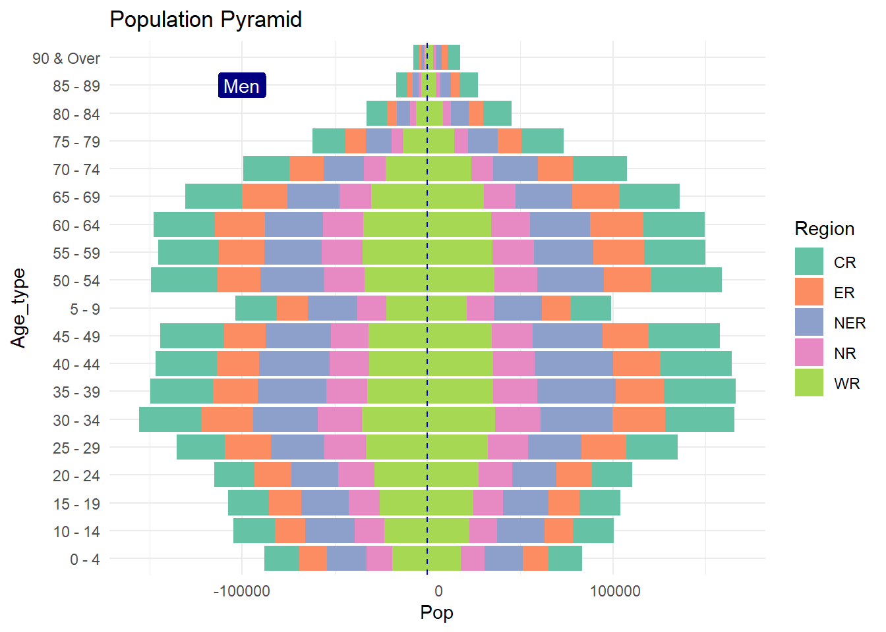
There are less residents in the Eastern and Northern regions, relative to other other regions.
Most of the population are in the working-age group due to the larger age range (15-64).
Among the elderly population, there are significantly more elderly in the central region, compared to other regions. There are less elderly in the northern region, relative to other regions.
Among the younger population, there is a younger population in the north eastern region relative to other regions.
The population in the working age group are close to evenly distributed in the 3 regions of North-Eastern, Central and Western Regions of Singapore.
7.2 Pie Chart of Gender by Population
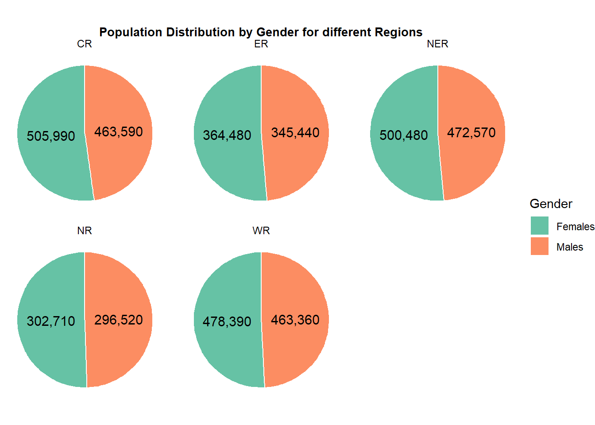
# Using groupby() and summarise
pop_by_sex<- sg_demo_2024 %>%
group_by(Sex, Region_type) %>%
summarize(pop_sex = sum(Pop), .groups = "drop")
# Compute the position of labels
data <- pop_by_sex %>%
group_by(Region_type) %>% # Group by Region_type first
arrange(desc(Sex)) %>%
mutate(prop = pop_sex / sum(pop_sex) * 100) %>% # percentage within each region
mutate(ypos = cumsum(prop) - 0.5 * prop) #y-positions for labels within each region
# Basic piechart
p3 <- ggplot(data, aes(x = "", y = prop, fill = Sex
)) +
geom_bar(stat = "identity", width = 1, color = "white") +
coord_polar("y", start = 0) +
theme_void() +
theme(legend.position = "right",
plot.title = element_text(hjust = 0.5, size = 10, face = "bold")) +
labs(title = "Population Distribution by Gender for different Regions") + # Added title
geom_text(aes(label = format(pop_sex, big.mark = ",")),
position = position_stack(vjust = 0.5), # Position the labels.
color = "black", size = 4) +
scale_fill_brewer(palette = "Set2", name = "Gender")
p3 + facet_wrap(vars(Region_type), nrow=2)There is a rather even distribution of gender in each region.
ER and NR have lesser population compared to the other regions, as confirmed in section 7.1.
7.3 Stacked Bar chart of Region by Population (with gender as hue)
# Using groupby() and summarise
pop_by_region<- sg_demo_2024 %>%
group_by(Region_type,Sex) %>%
summarize(pop_region = sum(Pop), .groups = "drop")
# plot the distribution as percentages
p4<-ggplot(pop_by_region,
aes(x = reorder(Region_type, -pop_region), y = pop_region/sum(pop_region),
fill=Sex,
text = paste("Population:", pop_region,
"\nPercent (%):", round(100 *pop_region / sum(pop_region), digits = 2),
"\nGender:", Sex)))+
geom_bar(stat = "identity", color = "black") +
theme(plot.title = element_text(hjust = 0.5, size = 16, face = "bold")) +
labs(x = "Region",
y = "Percent",
title = "Population of Residents by Region") +
scale_y_continuous(labels = scales::percent)
ggplotly(p4, tooltip = "text")%>%
style(
hoverlabel = list(bgcolor = "blue")
)- The stacked bar chart with hover tooltip easily summarises the multiple piecharts of distribution of genders in regions in section 7.2.
7.4 Scatterplot of Age by Gender
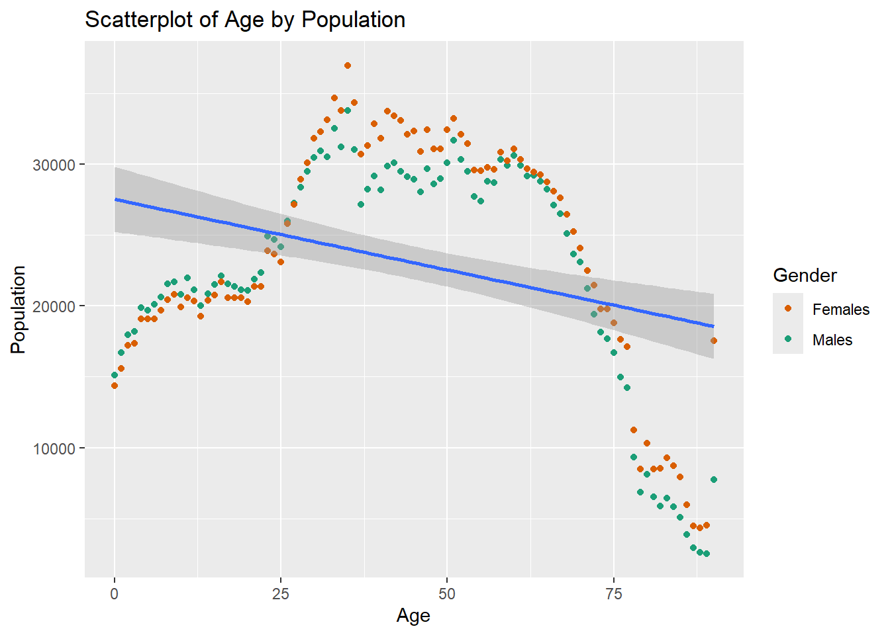
# Using groupby() and summarise
pop_by_age<- sg_demo_2024 %>%
group_by(Age_numerical, Sex) %>%
summarize(pop_age = sum(Pop), .groups = "drop")
# Define custom colors
male_color <- "#1B9E77" # Replace with your desired color for Male (e.g., hex code)
female_color <- "#D95F02" # Replace with your desired color for Female (e.g., hex code)
# Scatterplot with linear fit line
ggplot(pop_by_age, aes(x = Age_numerical, y = pop_age)) +
geom_point(data = subset(pop_by_age, Sex == "Males"),
aes(x = Age_numerical, y = pop_age, color = "Males")) +
geom_point(data = subset(pop_by_age, Sex == "Females"),
aes(x = Age_numerical, y = pop_age, color = "Females")) +
scale_color_manual(values = c("Males" = male_color, "Females" = female_color),
name = "Gender") +
geom_smooth(method = "lm")+
labs(title = "Scatterplot of Age by Population",
x = "Age",
y = "Population") The population rises from age 0 to 35, stagnates around age 35 to 60, then dips after that. There is an overall decline in the population as the age increases which is a reality in life.
Around the ages of 0 to 30, the population of female vs males are close.
A large group of the population are around the ages of 30 to 60. Suggesting an ageing population.
After age 75, there is usually a larger gap between the higher females compared to males population. This is stark for over 90 years of age. Suggesting higher longevity for females.
7.5 Histogram of Age by Population (with gender as hue)
In addition to geom_histogram(), we can also create a histogram plot by using scale_x_continuous() with geom_bar(). This method plots breaks in between each bar. A bivariate chart can be produced when the bars are filled by gender like a stacked bar chart.
# Using groupby() and summarise
pop_by_age<- sg_demo_2024 %>%
group_by(Age_numerical, Sex) %>%
summarize(pop_age = sum(Pop), .groups = "drop")
sorted_ages <- sort(unique(pop_by_age$Age_numerical))
# Plot the age distribution using a histogram
p5<-ggplot(pop_by_age, aes(x = Age_numerical, y = pop_age, fill = Sex,
text = paste("Age:", Age_numerical, "<br>",
"Gender:", Sex, "<br>",
"Population:", scales::comma(pop_age)))) +
geom_bar(stat = "identity", color = "black", width = 1) +
scale_x_continuous(breaks = sorted_ages,
labels = sorted_ages) +
labs(title = "Resident Population by Age and Gender",
x = "Age (Numerical)",
y = "Total Population") +
scale_y_continuous(labels = scales::comma) +
scale_fill_brewer(palette = "Set2", name = "Gender") +
theme(axis.text.x = element_text(angle = 45, hjust = 1, size=4, face = "bold"),
plot.title = element_text(hjust = 0.5, size = 9, face = "bold"))
ggplotly(p5, width = 1000, height = 700, tooltip = "text") # Specify tooltipThe histogram corroborates what was produced by the scatterplot in section 7.4.
Through the histogram is usually used to visualise distributions, the scatterplot appears to visualise and produce the insights much easier than the histogram in this case.
8. Exploratory Data Analysis (EDA)
Here, the graphical editor visualises, finds insights, plans, and rationalises the appropriate chart for the article in Section 9.
8.1 EDA 1: Population Pyramid (Age and Gender Structure)
Instead of the histogram produced in the earlier univariate/ bivariate analysis, a population pyramid can be produced for clearer visualisation.
Step 1: Preparatory work
pop_by_gender_age <-
pop_by_gender_age |>
mutate(total_pop = if_else(Sex == "Males", total_pop, -total_pop))
#pop_by_gender_age |>
# ggplot(aes(
# x = total_pop,
# y = Age_type,
# fill = Sex
# )) +
# geom_col()The median age of the population is around 42 years.
# Ensure total_pop is positive for this calculation
pop_for_median <- pop_by_gender_age %>%
mutate(abs_total_pop = abs(total_pop))
# Calculate the cumulative population
pop_cumulative <- pop_for_median %>%
arrange(Age_numerical) %>%
mutate(cumulative_pop = cumsum(abs_total_pop))
# Find the total population
total_population <- sum(pop_cumulative$abs_total_pop)
print(paste("Total Population:", total_population))[1] "Total Population: 4193530"# Determine the median population (half of the total)
median_population_point <- total_population / 2
# Find the age at which the cumulative population crosses the median point
median_age_population <- pop_cumulative %>%
filter(cumulative_pop >= median_population_point) %>%
slice_head(n = 1) %>%
pull(Age_numerical)
print(paste("Median Age of the Population:", median_age_population))[1] "Median Age of the Population: 42"Age labels were created for ordered age.
# Creation of age labels
age_labels <-
tibble(
Age_type = c(
"0-4",
"5-9",
"10-14",
"15-19",
"20-24",
"25-29",
"30-34",
"35-39",
"40-44",
"45-49",
"50-54",
"55-59",
"60-64",
"65-69",
"70-74",
"75-79",
"80-84",
"85-89",
"90 & Over"
)
) |>
mutate(
Age_type = fct_inorder(Age_type)
)
# age_labels plot only
age_labels |>
ggplot(
aes(
x = 1,
y = Age_type,
label = Age_type
)
) +
geom_text() +
theme_void()+
ggtitle("Age Group\n(Years)")+
theme(plot.title = element_text(hjust = 0.5, vjust = 2, size=10,
face = "bold", color = "black"))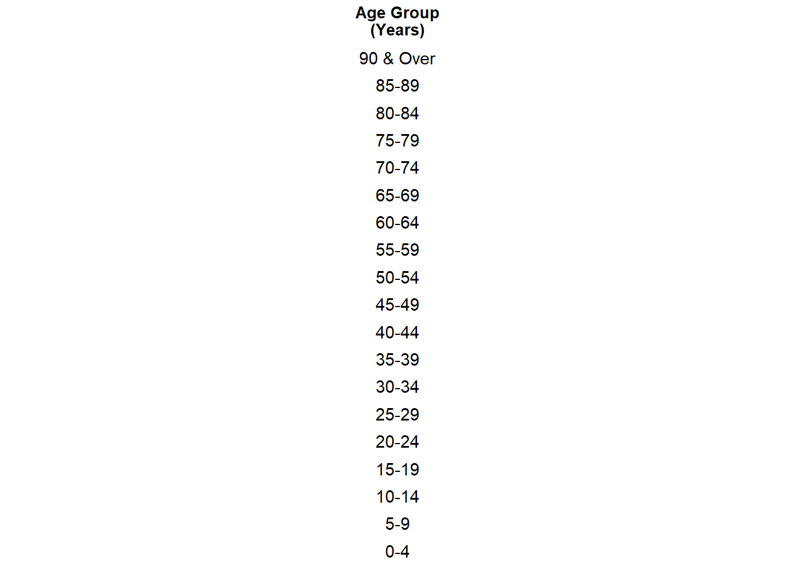
To ensure that the Age_type column in pop_by_gender_age is a factor with the levels taken directly from age_labels$Age_type, new column Age_Type_Ordered is created.
# ordered factor
pop_by_gender_age <- pop_by_gender_age %>%
mutate(Age_Type_Ordered = factor(Age_type, levels = age_labels$Age_type))
print(levels(pop_by_gender_age$Age_Type_Ordered)) [1] "0-4" "5-9" "10-14" "15-19" "20-24" "25-29"
[7] "30-34" "35-39" "40-44" "45-49" "50-54" "55-59"
[13] "60-64" "65-69" "70-74" "75-79" "80-84" "85-89"
[19] "90 & Over"# Double checking factor for Age_type matches for pop_by_gender_age and age_labels
unique_pop_age <- unique(pop_by_gender_age$Age_type)
print("Unique values in pop_by_gender_age$Age_type:")[1] "Unique values in pop_by_gender_age$Age_type:"print(unique_pop_age) [1] "0-4" "5-9" "10-14" "15-19" "20-24" "25-29"
[7] "30-34" "35-39" "40-44" "45-49" "50-54" "55-59"
[13] "60-64" "65-69" "70-74" "75-79" "80-84" "85-89"
[19] "90 & Over"unique_labels_age <- unique(age_labels$Age_type)
print("Unique values in age_labels$Age_type:")[1] "Unique values in age_labels$Age_type:"print(unique_labels_age) [1] 0-4 5-9 10-14 15-19 20-24 25-29 30-34
[8] 35-39 40-44 45-49 50-54 55-59 60-64 65-69
[15] 70-74 75-79 80-84 85-89 90 & Over
19 Levels: 0-4 5-9 10-14 15-19 20-24 25-29 30-34 35-39 40-44 45-49 ... 90 & OverStep 2: Creation of Empty Male and Female plots
population_pyramid_women <-
pop_by_gender_age |>
filter(Sex == "Females") |>
ggplot(aes(
x = total_pop,
y = Age_Type_Ordered
)) +
geom_col() +
theme_void()population_pyramid_men <-
pop_by_gender_age |>
filter(Sex == "Males") |>
ggplot(aes(
x = total_pop,
y = Age_Type_Ordered
)) +
geom_col() +
theme_void()population_pyramid_women +
population_pyramid_men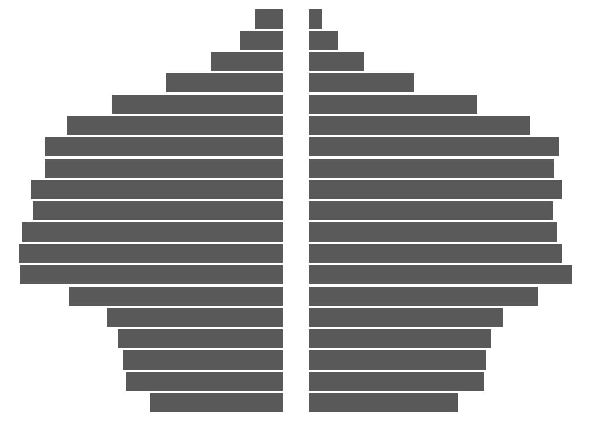
Step 3: Plotting of Male + Female + Age Label plots
# one women plot
population_pyramid_women <-
pop_by_gender_age |>
filter(Sex == "Females") |>
ggplot(aes(
x = total_pop,
y = Age_Type_Ordered
)) +
geom_col(fill = "#A9C27F") +
annotate(
geom = "label",
x = -120000,
y = 19,
label = "Females",
fill = "#A9C27F",
color = "black",
label.size = 0,
label.padding = unit(0.3, "lines")
) +
scale_x_continuous(breaks = breaks_pretty(),
labels = function(x) scales::comma(abs(x)))+
theme_void()+
theme(
axis.text.x = element_text(),
panel.grid.major.x = element_line(color = "grey90")
)
# one men plot
population_pyramid_men <-
pop_by_gender_age |>
filter(Sex == "Males") |>
ggplot(aes(
x = total_pop,
y = Age_Type_Ordered
)) +
geom_col(fill = "#004f39") +
annotate(
geom = "label",
x = 120000,
y = 19,
label = "Males",
fill = "#004f39",
color = "white",
label.size = 0,
label.padding = unit(0.3, "lines")
) +
scale_x_continuous(breaks = breaks_pretty(),
labels=function(x) scales::comma(abs(x)))+
theme_void()+
theme(
axis.text.x = element_text(),
panel.grid.major.x = element_line(color = "grey90")
)
# combine
population_pyramid_women +
population_pyramid_men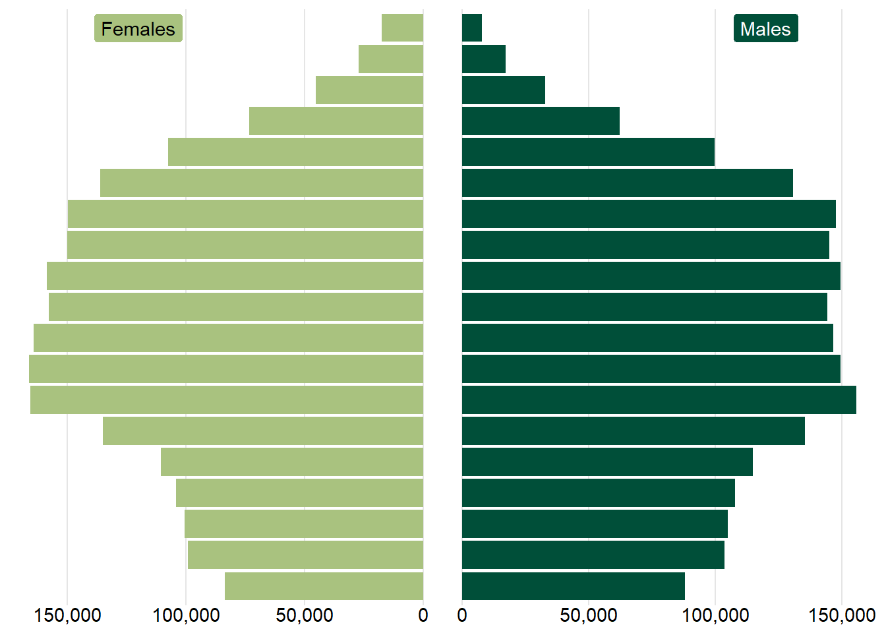
age_labels_plot <-
age_labels |>
ggplot(
aes(
x = 1,
y = Age_type,
label = Age_type
)
) +
geom_text() +
theme_void()+
ggtitle("Age Group\n(Years)")+
theme(plot.title = element_text(hjust = 0.5, vjust = 2, size=10,
face = "bold", color = "black"))
population_pyramid_women +
age_labels_plot +
population_pyramid_men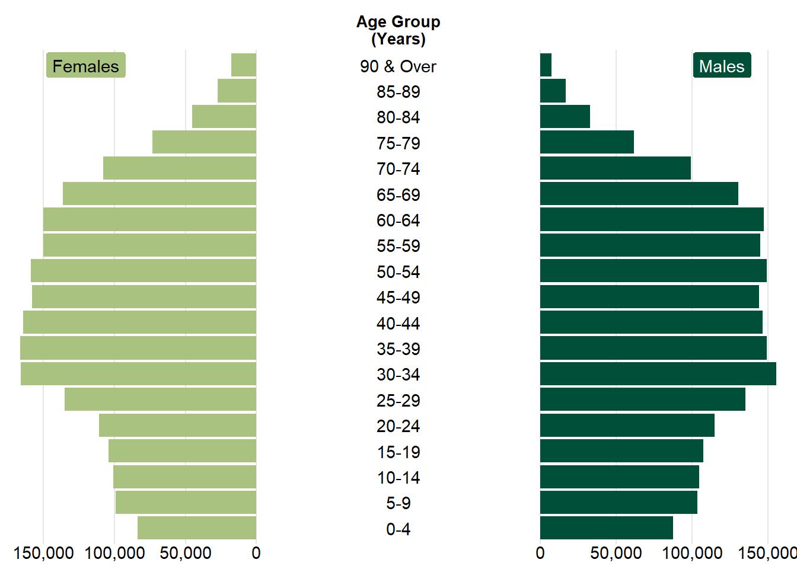
Final Step: View the Population Pyramid Plot
After layout adjustments, the population pyramid was plotted.
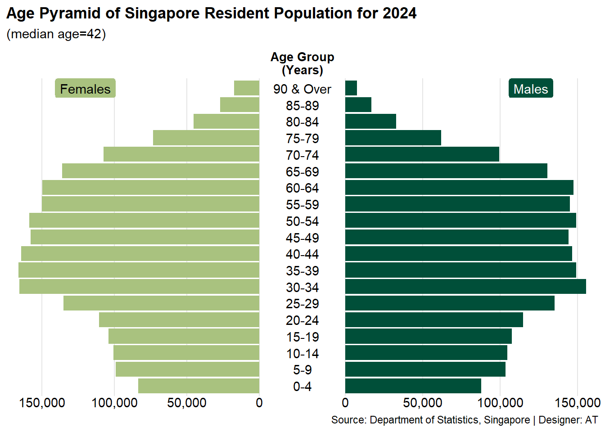
population_pyramid_women +
age_labels_plot +
population_pyramid_men +
plot_layout(
widths = c(4.3, 1, 4.3))+ # both sides are 4.3 times the age_label_plot
plot_annotation(
title = "Age Pyramid of Singapore Resident Population for 2024",
subtitle="(median age=42)",
caption = "Source: Department of Statistics, Singapore | Designer: AT",
theme = theme(plot.title = element_text(face = "bold"),
plot.background = element_rect(fill = "#d2dbe6", color = NA))
)The population pyramid visualises the population’s age and gender distribution. The population size is shown on the x-axis while the age-groups are represented on the middle y-axis. The population numbers are depicted within each age-group bar by gender on the left (Females) and right (Males). The bottom bar represents the youngest age group (0-4) and is incremental in age-group towards the top (90 & Over).
It is possible to visualise the regions within each age group as what Michal Palenik produced for three employment statuses. However, this method faces the issue of complexity and difficulty reading in our case due to having 5 regions, with the regions close in region size per age-group.
See an example below which shows the complexity.
Comparative Distribution and Structure of Age, Gender, and Population
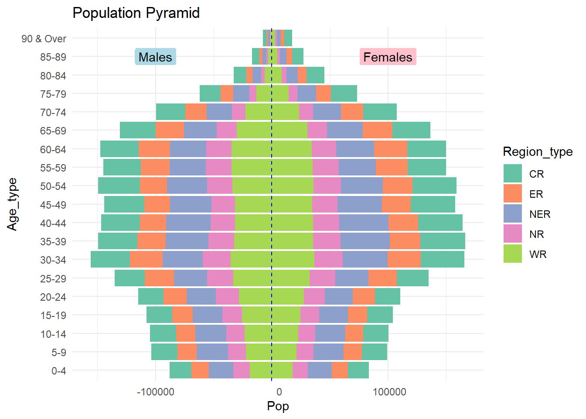
# Order the data by Region_type within each Age and Gender group.
sg_demo_2024_reshaped <- sg_demo_2024 %>%
arrange(Sex, Age_type, Region_type)
# ordered factor
sg_demo_2024_reshaped <- sg_demo_2024_reshaped %>%
mutate(Age_Type_Ordered2 = factor(Age_type, levels = age_labels$Age_type))
# Create a basic bar chart for one gender
basic_plot <- ggplot(sg_demo_2024_reshaped,
aes(x = Age_Type_Ordered2,
y= ifelse(Sex=='Males', -Pop, Pop),
fill = Region_type)) +
geom_bar(stat = "identity")
# Create population pyramids for both genders and combine them
population_pyramid <- basic_plot +
coord_flip() +
theme_minimal() +
scale_fill_brewer(palette = "Set2") +
labs(
x = "Age_type",
y = "Pop",
fill = "Region_type",
title = "Population Pyramid") +
scale_y_continuous(breaks = breaks_pretty(),
labels = function(y) format(y, scientific = FALSE))+
geom_hline(yintercept = 0, color = "blue", linetype = "dashed", size = 0.5) + # Males and Females separation
annotate(geom = "label",x = 18, y = 100000,
label = "Females", fill = "pink",
color = "black",label.size = 0)+
annotate(geom = "label",x = 18, y = -100000,
label = "Males", fill = "lightblue",
color = "black",label.size = 0)
print(population_pyramid) # Display the plot8.2 EDA 2: Histogram (Distribution of population by age stacked by gender, for different regions)
The Histogram
# Using groupby() and summarise
pop_by_age_sex_region<- sg_demo_2024 %>%
group_by(Age_numerical, Sex, Region_type) %>%
summarize(pop_age = sum(Pop), .groups = "drop")
sorted_ages2 <- sort(unique(pop_by_age_sex_region$Age_numerical))
# Plot the age distribution using a histogram
p7<-ggplot(pop_by_age_sex_region, aes(x = Age_numerical, y = pop_age, fill = Sex,
text = paste("Age:", Age_numerical, "<br>",
"Gender:", Sex, "<br>",
"Population:", scales::comma(pop_age)))) +
geom_bar(stat = "identity", color = "black", width = 1) +
scale_x_continuous(breaks = sorted_ages2,
labels = sorted_ages2) +
labs(title = "Resident Population by Age and Gender",
x = "Age",
y = "Total Population") +
scale_y_continuous(labels = scales::comma) +
scale_fill_brewer(palette = "Set2", name = "Gender") +
theme_economist()+
theme(axis.text.x = element_text(angle = 90, hjust = 1, size=5, face = "bold"),
plot.title = element_text(hjust = 0.5, size = 11, face = "bold"),
axis.title.x = element_text(size = 8),
axis.title.y = element_text(size = 8),
axis.text.y = element_text(size = 8),
legend.title = element_text(size = 6),
legend.text = element_text(size = 6),
strip.text = element_text(size = 8))
ggplotly(p5, width = 1000, height = 700, tooltip = "text") # Specify tooltipp7+ facet_wrap(vars(Region_type), nrow=5)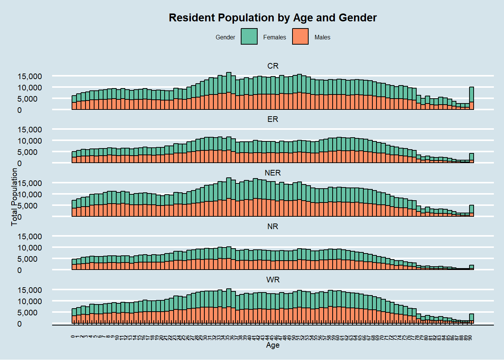
The histogram/ stacked bar chart shows the regional population distribution and regional gender distribution/ structure.
The Scatterplot
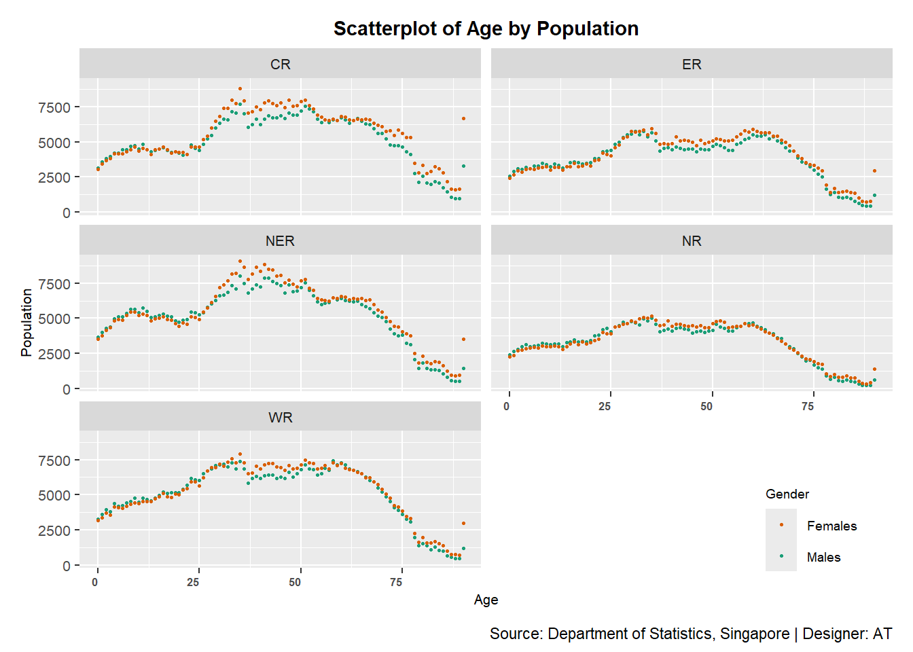
# Define custom colors
male_color <- "#1B9E77" # Replace with your desired color for Male (e.g., hex code)
female_color <- "#D95F02" # Replace with your desired color for Female (e.g., hex code)
# Scatterplot with linear fit line
p8<-ggplot(pop_by_age_sex_region, aes(x = Age_numerical, y =pop_age)) +
geom_point(data = subset(pop_by_age_sex_region, Sex == "Males"), size=0.5,
aes(x = Age_numerical, y = pop_age, color = "Males")) +
geom_point(data = subset(pop_by_age_sex_region, Sex == "Females"), size=0.5,
aes(x = Age_numerical, y = pop_age, color = "Females")) +
scale_color_manual(values = c("Males" = male_color, "Females" = female_color),
name = "Gender") +
labs(title = "Scatterplot of Age by Population",
x = "Age",
y = "Population") +
theme(axis.text.x = element_text(angle = 0, hjust = 1, size=6, face = "bold"),
plot.title = element_text(hjust = 0.5, size = 11, face = "bold"),
axis.title.x = element_text(size = 8),
axis.title.y = element_text(size = 8),
axis.text.y = element_text(size = 8),
legend.title = element_text(size = 7),
legend.text = element_text(size = 7),
strip.text = element_text(size = 8),
legend.position = c(0.9, 0.08))+
plot_annotation(
caption = "Source: Department of Statistics, Singapore | Designer: AT")
p8+ facet_wrap(vars(Region_type), nrow=3)Similar to section 7.4, when a scatterplot of age by population was plotted for the different regions, the gaps between the genders are more apparent in the scatterplot. Thus, the scatterplot appears to be a better choice here.
8.3 EDA 3: Raincloud Plot (Distribution of weighted population by age-groups for different regions)
8.3.1 Creation of weighted population
weighted_age_type <- pop_by_gender_age %>%
group_by(Age_type, Region_type, Sex) %>%
summarise(weighted_population = sum(abs(total_pop)), .groups = 'drop')The weighted_population is the total absolute population count for each specific combination of Age_type, Region_type, and Sex. The “weighting” here is based on the aggregation of the population within these defined groups.
8.3.2 Plotting Raincloud Plots
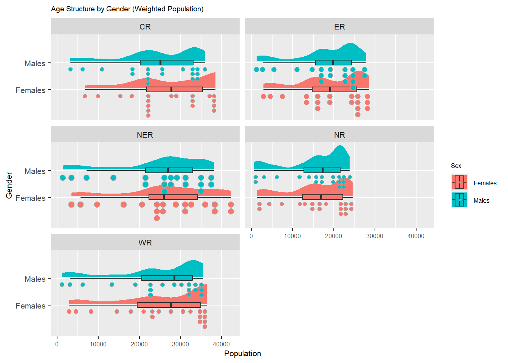
# Half Eye visualization
ggplot(weighted_age_type,
aes(x = weighted_population,
y = Region_type)) +
stat_halfeye(adjust = 0.5,
justification = -0.2,
.width = 0,
point_colour = NA)
# Define custom flat violin geom without ggname()
GeomFlatViolin <- ggproto("GeomFlatViolin", Geom,
setup_data = function(data, params) {
data$width <- data$width %||%
params$width %||% (resolution(data$x, FALSE) * 0.9)
data %>%
group_by(x) %>%
mutate(
ymin = min(y),
ymax = max(y),
xmin = x,
xmax = x + violinwidth * width
)
},
draw_group = function(data, panel_scales, coord) {
data <- transform(data,
xminv = x,
xmaxv = x + violinwidth * (xmax - x))
newdata <- rbind(
arrange(transform(data, x = xmaxv), y),
arrange(transform(data, x = xminv), -y)
)
newdata <- rbind(newdata, newdata[1, ])
# No need for ggname(), directly use GeomPolygon$draw_panel
GeomPolygon$draw_panel(newdata, panel_scales, coord)
},
draw_key = draw_key_polygon,
default_aes = aes(
weight = 1, colour = "black", fill = "white", size = 0.5,
alpha = NA, linetype = "solid"
),
required_aes = c("x", "y")
)
# Wrapper function for geom_flat_violin
geom_flat_violin <- function(mapping = NULL, data = NULL, stat = "ydensity",
position = "dodge", trim = TRUE, scale = "area",
show.legend = NA, inherit.aes = TRUE, ...) {
layer(
data = data,
mapping = mapping,
stat = stat,
geom = GeomFlatViolin,
position = position,
show.legend = show.legend,
inherit.aes = inherit.aes,
params = list(trim = trim, scale = scale, ...)
)
}
# Actual plot
p9 <- ggplot(weighted_age_type,
aes(x = weighted_population,
y = Sex,
fill = Sex)) + # Map fill to Region_type
stat_halfeye(adjust = 0.6,
justification = -0.05,
.width = 0,
point_colour = NA,
position = position_nudge(y = 0)) +
geom_boxplot(width = .18,
outlier.shape = NA)+
stat_dots(side = "left", size = 0.5,
position = position_nudge(y = -0.15)) + # Nudge dots lower
coord_cartesian(clip = "off") + # Important for half-eye if it extends beyond the box
labs(title = "Age Structure by Gender (Weighted Population)",
x = "Population",
y = "Gender")+
theme(
axis.title.x = element_text(size = 8),
axis.title.y = element_text(size = 8),
axis.text.x = element_text(size = 6),
axis.text.y = element_text(size = 8),
legend.title = element_text(size = 6),
legend.text = element_text(size = 6),
plot.title=element_text(size=7),
strip.text = element_text(size = 8)
)+
scale_y_discrete(expand = expansion(add = c(1, 1))) # Add vertical expansion
rcp1<- p9 + facet_wrap(vars(Region_type), nrow=3)
rcp1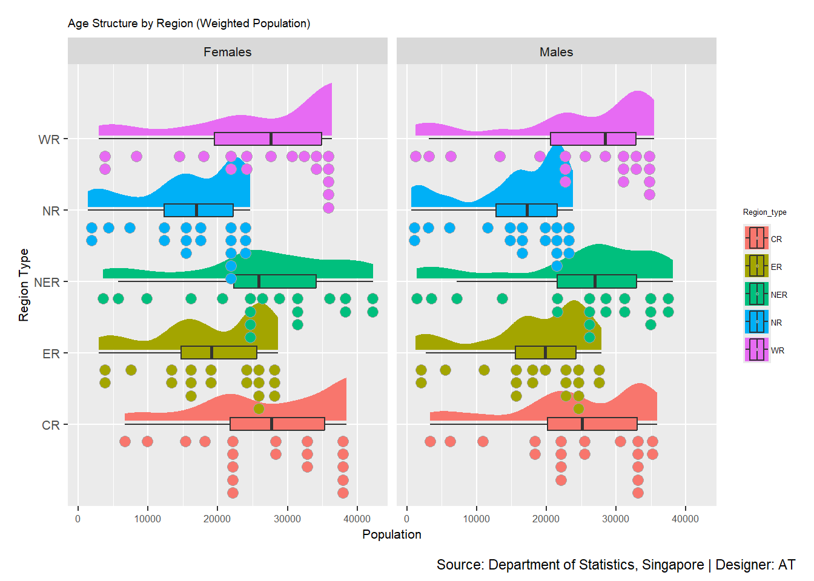
p10 <- ggplot(weighted_age_type,
aes(x = weighted_population,
y = Region_type,
fill = Region_type)) + # Map fill to Region_type
stat_halfeye(adjust = 0.6,
justification = -0.05,
.width = 0,
point_colour = NA) +
geom_boxplot(width = .18,
outlier.shape = NA)+
stat_dots(side = "left", size = 0.5,
position = position_nudge(y = -0.15)) + # Nudge dots lower
coord_cartesian(clip = "off") + # Important for half-eye if it extends beyond the box
labs(title = "Age Structure by Region (Weighted Population)",
x = "Population",
y = "Region Type")+
theme(
axis.title.x = element_text(size = 8),
axis.title.y = element_text(size = 8),
axis.text.x = element_text(size = 6),
axis.text.y = element_text(size = 8),
legend.title = element_text(size = 5),
legend.text = element_text(size = 5,margin = margin(r = 0, l = 0, unit = "pt")),
plot.title=element_text(size=7),
strip.text = element_text(size = 8)
)+
scale_y_discrete(expand = expansion(add = c(1, 1)))+ # Add vertical expansion
plot_annotation(
caption = "Source: Department of Statistics, Singapore | Designer: AT")
rcp2<-p10 + facet_wrap(vars(Sex), nrow=1)
rcp2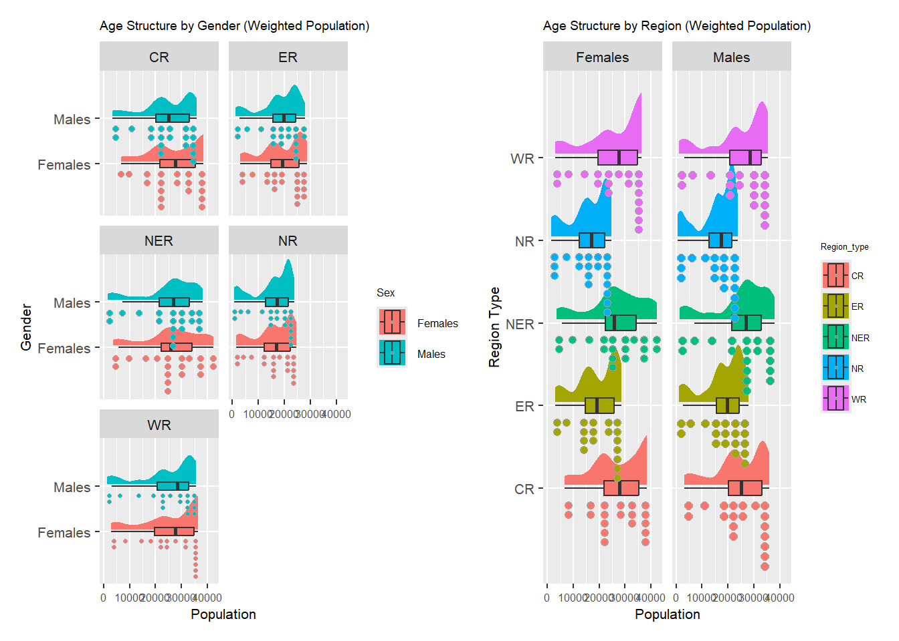
rcp1|rcp2The charts above show weighted_population on the x-axis and Region_type or Sex on the y-axis. The weighted_population on the x-axis represents the total absolute population count for each specific combination of Age_type, Region_type, and Sex.
The y-axis of the stat_halfeye() component does NOT directly represent the population count, it represents the probability density of the weighted_population values within each level of the grouping variable on the y-axis (which is Region_type or Sex).
For each gender and region:
Peaks: The age categories within that region and gender that have a relatively common occurrence. (Many age-gender combination in that region have a total population around the x-axis value)
Troughs: The age categories within that region and gender that have a relatively less common occurrence. (Lesser age-gender combination in that region have a total population around the x-axis value)
Spread: The range of total populations across the different age categories within that region. A wider distribution means a greater difference in population sizes between age groups.
9. Daily Article

Singapore
Demographic structures and distribution of Singapore in 2024
Published Date: 01 May 2025
In this article, we will cover the population pyramid, scatterplots, and raincloud plots. These are useful to visualise the demographic structures and distributions of a country.
9.1 Population Pyramids
What is a population pyramid?
Population pyramids show the distribution of age-groups between the male (on the right) and female (on the left) population divided by the center. The population size is shown on the x-axis while the age-groups are represented on the middle y-axis. The youngest age-group (at 0-4) starts at the bottom which rises to the oldest (at 90 & Over) at the top. It is useful for studying the effects of armed conflicts, infant mortality, mortality in childbirth, birth policies and migration.
Why is it called a population pyramid?
When more babies are born compared to population mortality, the graph forms a triangular shape like a pyramid. There are three main types of population pyramid shapes/ types: Triangular shape (Expansive), Bell shape (Stationary), Bulb shape (Constrictive).
 Insights
Insights
How about Singapore’s population pyramid?
Singapore’s population pyramid here shows the age and gender distributions.
Singapore in year 2024 has a Constrictive type. It is wider in the middle due to representation by mostly middle aged and elderly people, but fewer young people. This is corroborated with the median age at 42.
The top of the pyramid is also wider than other two pyramid types, due to longer life expectancy.
There were more females that outlived males as they aged, which is more prevalent for older age-groups (75s to more than 90s).
9.2 Scatterplot
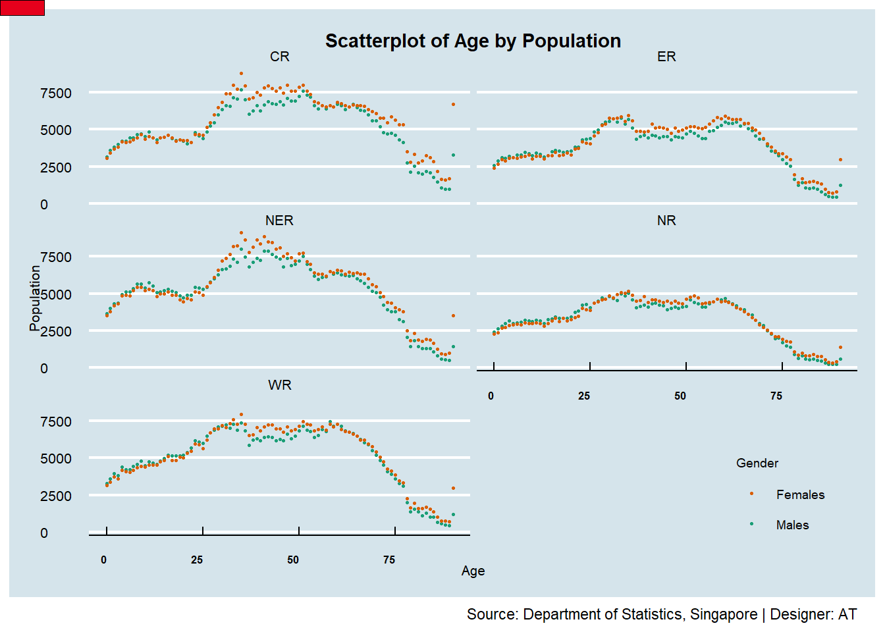
We have earlier seen the age distribution by gender through the population pyramid.
To visualize the population counts in different regions a scatterplot was produced which shows the population across the five regions. The coloured dots shows the different gender.
Insights
What is the regional distribution from the scatterplot?
- Regional population distribution
The regions are NER: North-East, CR: Central, WR: West, ER: East, NR: North). Most residents are clustered in NER (23%), CR (23%), and WR (22%), a smaller segment are in ER (17%) and NR (14%). Perhaps because these areas are near the Central Business Districts, Shopping Districts, and also close to popular educational institutions.
- Regional gender distribution/ structure
There is a rather even distribution of males to females in each region as seen by the female and male hue colours as close to each other.
Across different ages, a wider gap between the population count for both genders was observed for NER, CR, and WR as compared to ER and NR.
The shape of the distribution across different regions are very similar, with ER and NR having a flatter shape, relative to the other three regions.
The population rises from age 0 to 35, stagnates around age 35 to 60, then dips after that. There is an overall decline in the population as the age increases which is a reality in life.
Around the ages of 0 to 30, the population of female vs males are close.
A large group of the population are around the ages of 30 to 60. Suggesting an ageing population.
After age 75, there is usually a larger gap between the higher females compared to males population. This is stark for over 90 years of age. Suggesting higher longevity for females.
9.3 Raincloud plot
Compared to the earlier scatterplots, this chart integrates the density, summary statistics, and raw data into a single, compact visualization for each group (gender or region).
The charts above show weighted_population on the x-axis and Region_type or Sex on the y-axis. The weighted_population on the x-axis represents the total absolute population count for each specific combination of Age_type, Region_type, and Sex.
The y-axis of the stat_halfeye() component does NOT represent the population count, it represents the probability density of the weighted_population values within each level of the grouping variable on the y-axis (which is Region_type or Sex).
Stat halfeye:
The shape shows the distribution of the weighted population values per region or gender:
Peaks: Higher probability that many age-gender combination in that region have a total population around the x-axis value, opposite is true for troughs.
- Peaks towards the right (left): concentrated at higher (lower) values.
Spread: A wider distribution indicates greater differences in population sizes between age groups.
- A wide (narrow) distribution: greater (smaller) diversity in the weighted population values within that region/ gender, with significant individuals having both higher and lower (similar clustered) weighted populations.
Boxplot:
Comparing the medians (the lines inside the boxes) across different
Region_typelevels, to see which regions tend to have higher or lower typical weighted populations.Comparing the lengths of the boxes (IQR), to see which regions have more or less variability in their middle 50% of weighted population values.
Looking at the whiskers, a sense of the overall range of weighted population values per region can be determined.
Raindrop:
- The outlier raindrops indicate specific age/gender within a region that have exceptionally high or low total populations compared to the majority within that region.
Insights
What are the Density, Statistics, Outliers?
Density:
Females have a wider distribution than Males for CR, NER, WR. Regions NER, followed by CR, then WR have a wider distribution than ER and NR. This suggestsgreater diversity in the weighted population values within Females or NER, CR, WR, with significant points having both higher and lower weighted populations.
With that also comes greater variability in the weighted population values.
Highest peaks nearing 40,000 for WR and CR, suggesting higher probability that many age-gender combination in those regions have a total population around the x-axis value. NER, NR and ER have highest peaks around 30,000.
Statistics:
- Looking at the median, WR, CR, NER (Females) and WR, NER, CR (Males), tend to have higher weighted populations. Median is similar between genders in each region.
Outliers:
- Potential outliers observed for NER (both genders), WR males, ER males.
10. Summary and Future Research
10.1 Summary
Based on the exploratory data analysis (EDA) done above, we can conclude the following about the demographic distribution and structure of Singapore in 2024:
Age and Gender Distribution: The population pyramid displays age-group variation in population. There is an ageing population with residents at a median age of 42. There are lesser younger and elderly from low birth rates and decline due to old-age mortality. There were increasingly more Females compared to Males as the age-group increases, suggesting Females outliving Males which corroborates with general biological and behavioural reasons.
Gender and Region Distribution: There is a rather even distribution of males to females in each region. Also, most residents are clustered in NER, CR and WR. Across different ages, a wider gap between the population count for both genders was observed for NER, CR, and WR as compared to ER and NR. The shape of the distribution across different regions are very similar, with ER and NR having a flatter shape, relative to the other three regions.
Region, Gender and Age Distribution: Females have a wider distribution than Males for CR, NER, WR.
Regions NER, followed by CR, then WR have a wider distribution than ER and NR. This suggestsgreater diversity in the weighted population values within Females or NER, CR, WR, with significant points having both higher and lower weighted populations.
Highest peaks nearing 40,000 for WR and CR, suggesting higher probability that many age-gender combination in those regions have a total population around the x-axis value. NER, NR and ER have highest peaks around 30,000.
With that also comes greater variability in the weighted population values.
Highest peaks nearing 40,000 for WR and CR, suggesting higher probability that many age-gender combination in those regions have a total population around the x-axis value. NER, NR and ER have highest peaks around 30,000.
10.2 Future Research
Further research can be done on the regions where the labour force (age 15 and over) reside in. This might be useful for urban planning of offices.
With more data, labour force participation rate per region can be obtained by zooming into the working age groups (15-24, 25-54, 55-64, 65 and over).
11. References and inspiration
Steven P. Sanderson II, MPH (2023)Creating Population Pyramid Plots in R with ggplot2
David Keyes (2024)How to make polished population pyramids in ggplot: part 1
Michal Palenik (2024)Deomographic Pyramid by Economic Activity Austria 2023
Singstat (2024)Population Trends
URA (2025) Regional Highlights :
National Geographic (2023) Population Pyramid
2travelacrosstime (2023) Types of Population Pyramids
Singapore Department of Statistics (2020) National Statistical Standards:::: ::: :::::